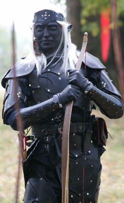

Личная страница Северина
Статус: Раунар
Любимое оружие:
Lukbis Robin
История Северина
Северин был единственным ребенком в семье. Свое имя он получил в честь края легенд и сказаний Великого Севера, цели и мечты всех авантюристов. Его отец и мать служили в чед-насадском патрульном отряде наездников на звероящерах, и, после выхода на поверхность, они открыли в себе талант рейнджеров, поскольку быстро научились находить общий язык с животными земель под солнцем. Сын пошел по стопам родителей, поскольку с раннего детства он жил на природе, в предгорьях великого Хребта Мира, и жизнь рейнджера была для него привычной.
К 20 годам юный следопыт уже изучил все окрестности и отходил от родного дома все дальше и дальше. Однажды, следуя по следам незнакомого существа, он пересек великие горы. Следы на земле быстро скрылись под снегом, юному дроу, что б не замерзнуть, пришлось искать укрытие. Забившись в маленькую неприглядную пещерку, пол под ним рухнул, и рейнджер стремительно полетел вниз. Только благодаря врожденным способностям к левитации дроу смог пережить падение. Оказавшись в коридоре, Северин понял, что назад он не выберется и нужно искать другой выход. Около недели он безуспешно бродил по пещерам верхнего Андердарка, пока не набрел на странную маленькую пещеру – ее стены были искусно обработаны, а колонны у стен украшали руны. Посреди пещеры сиял портал, юный дроу знал, как выглядят порталы от старших эльфов, видевших чудеса подземных городов Дроу. Это был последний шанс, поскольку продовольствия и воды оставалось совсем немного. Взяв на изготовку короткий меч, он шагнул в неизведанное... Через мгновение его ослепил солнечный свет, а щебет птиц и стрекот насекомых казался громом в сравнении с гнетущей тишиной Андердарка.
Северин оказался в жарком тропическом лесу. Вокруг было полно дичи и питательных плодов, так что проблема голода была решена. Через несколько часов он облюбовал широкое, раскидистое дерево, где провел ночь, изучая незнакомые звезды.
Несколькими днями позже, изучая округу, он наткнулся на странного ящера, примерно 6 футов длинной, с массивными задними ногами и парой длинных когтей на них. Копье торчало из бедра ящера. Следопыт месяц выхаживал существо, но по выздоровлению ящера, сумел подружиться с хищником и обрел надежного и верного друга. Ящер передвигался исключительно на задних ногах, так как передние были совсем небольшими и непригодными для передвижения.
Они охотились вместе, играли, и дроу больше не было одиноко. Но все же тоска по дому не оставляла его сердце.
Однажды дроу и ящер вышли из лесу и увидели пару крестьян с раскосыми глазами, работающих в поле. Вид ящера был для них более устрашающим, чем вид темного эльфа, они закричали "Раптор! Раптор!" и бросив мотыги стали убегать. Когда следопыт и его когтистый друг добрались до деревни, дроу оставил ящера подальше, а сам двинулся в селение с поднятой рукой, в знак приветствия. Но в этих краях к дроу явно не привыкли. Копье, пролетев в футе от лица, воткнулось в землю. «Общения не будет» подумал следопыт и быстро скрылся в кустах. Вскоре они уже шли к своему временному пристанищу. Через день, собрав скудные пожитки, дроу и его чешуйчатый товарищ отправились в длинное путешествие на Север.
Пять долгих лет они скитались по Кара-Туру, стараясь избегать встреч с людьми. Но однажды, они набрели на бродячих торговцев. Те были не столько напуганы, сколько удивлены, увидев странствующего дроу. Но следопыту удалось высказать им свои благие намеренья. Некоторое время они путешествовали вместе, и когда пришла пора расставаться, торговцы одарили Северина наручами с изображением Миллики, девы-защитницы леса. Они поведали ему о богине, покровительнице следопытов, владычице единогов. До этого момента Северин не задумывался о выборе божества, ведь Эилистрае, которой поклонялись в Вэльдрине никому не навязывала свое покровительство.
Дальнейший путь на родину был относительно спокоен.
Через какое-то время дроу заметил, что ящер стал слабеть. Он был уже не молод, и охота и путешествие становилось для него все сложнее. В один из дней ящер не проснулся... Рейнджер стал молиться Миллике, что б она приняла дух зверя. Через мгновение он почувствовал, что за спиной кто-то стоит. Это была молодая девушка эльф, она улыбнулась и сказала «Возьми его коготь, и дух твоего друга всегда будет с тобой, такова его воля»… Поступив по велению богини, он взял себе коготь, сжег ящера и развеял его пепел по миру.
Два долгих года шел он в одиночестве, и вскоре перед его глазами замаячил восточный край Хребта Мира, где его ждали родные.
Вскоре история его путешествия достигла воинов элитного отряда рейнджеров, и его опыт оказался полезным и интересным даже для опытных бойцов.
И вот Северин снова ходит по родным горам, но уже под знаменем Владыки Вэльдрина.